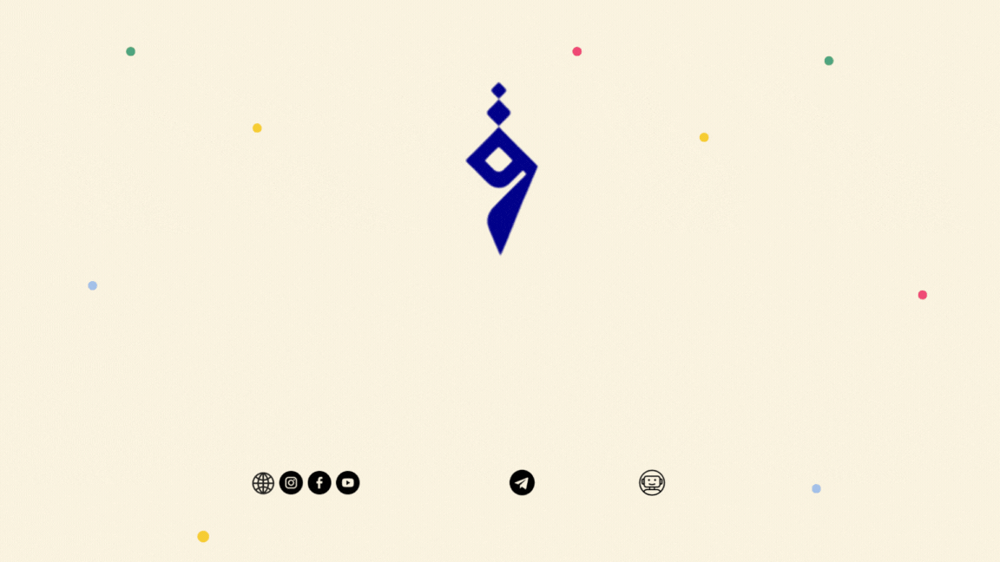

QUAFBot
وَنُنَزِّلُ مِنَ الْقُرْآنِ مَا هُوَ شِفَاءٌ وَرَحْمَةٌ لِّلْمُؤْمِنِينَ

📖
Digital Library
Complete Qur'an with translations in 45 languages plus classical Islamic texts for comprehensive study.
🎯
Quiz System
Test your knowledge with 16 different categories and earn certificates for your achievements.
🎵
Audio & Video Content
Learn proper Tajweed with videos and listen to educational lectures from renowned scholars.
📂
Study Materials
Access research papers, syllabi, and comprehensive study guides for structured learning.
📱
Community Hub
Connect with fellow learners through integrated social media links and community channels.
📊
Progress Tracking
Monitor your learning journey with detailed analytics and progress reports.
Ready to Start?
Begin your Islamic learning journey today with a simple command
🚀 Start learning: /start
📞 Support: Built-in help menu